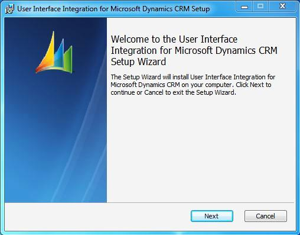
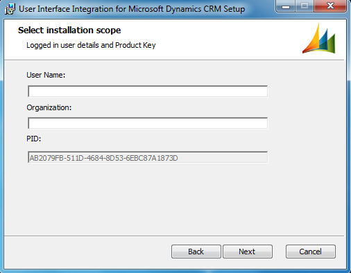
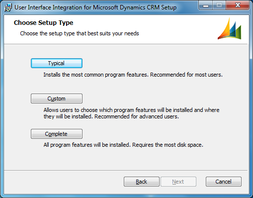
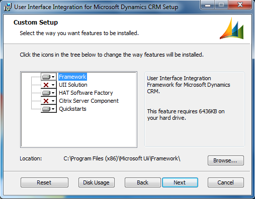
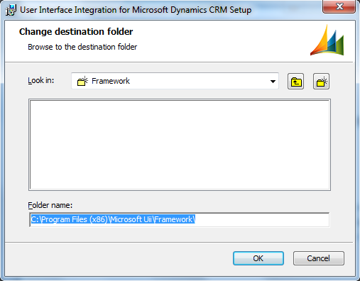
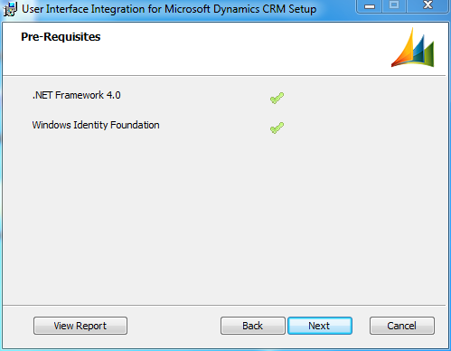
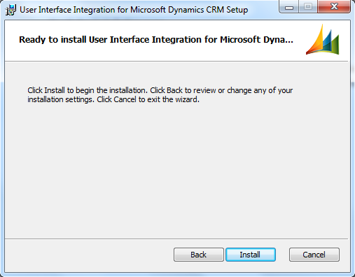
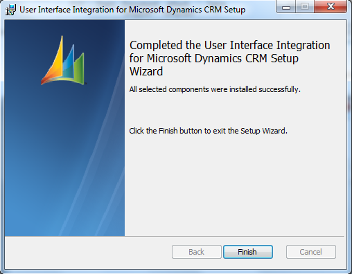

UII includes both 32-bit and 64-bit installer packages for client computers. To install the client components, execute the appropriate installer as described next.
To use the installer package to install UII client components
- Run CRMv2011-UII-i386-1033.msi (for 32-bit computers) or CRMv2011-UII-amd64-1033.msi (for 64-bit computers). The Welcome to the User Interface Integration for Microsoft Dynamics CRM Setup Wizard page appears, as shown in the following illustration. Click Next.

- The End-User License Agreement page appears. If you agree to the terms, select I accept the terms in the License Agreement, and then click Next.
- The Select Installation Scope page appears, as shown in the following illustration. Type your user name in the User Name text box, type the name of your organization in the Organization text box, and then click Next.

- The Choose Setup Type page appears, as shown in the following illustration. Click the Custom button.

- Click Browse to select a destination folder. To use the default destination folder, click Next.

If you click Browse, the Change destination folder page appears, as shown in the following illustration. Find the framework location that you want to use by either typing the folder name in the Folder name box or selecting it from the Look in list. Click OK.

- The Custom Setup page reappears. Click the icons for each additional feature that you want to install, and then click Next.
- The Pre-Requisites page appears, as shown in the next illustration. This page lists the software required for the components that you selected. Review the list, and then click Next.
 Note:
Note:If you do not have a required component installed on your system, an X is shown next to the name of the missing component. To download that component, click View Report. This generates the User Interface Integration for Microsoft Dynamics CRM 2013 Prerequisites Installation Report. Click the link to download the missing component, and then run the UII setup again. 
- The Ready to install User Interface Integration for Microsoft Dynamics CRM page appears, as shown in the following illustration. Click Install to start the installation.

- The Completed the User Interface Integration for Microsoft Dynamics CRM Setup Wizard page appears, as shown in the following illustration. Click Finish.

Note:To create an installation log in UI mode, use the following command:
msiexec.exe /i <UII Setup filename> /l*v "InstallLog.log"